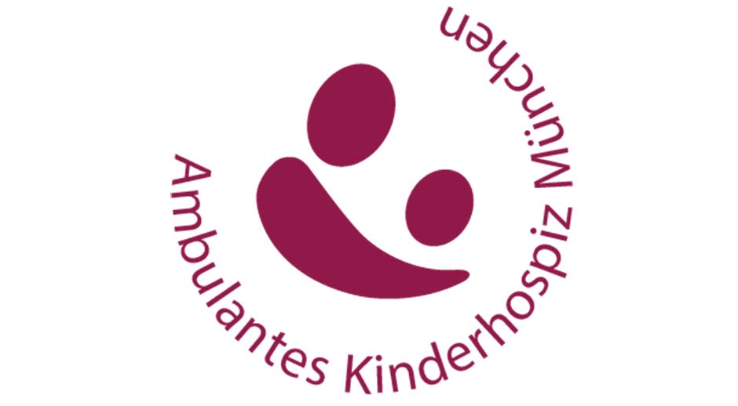
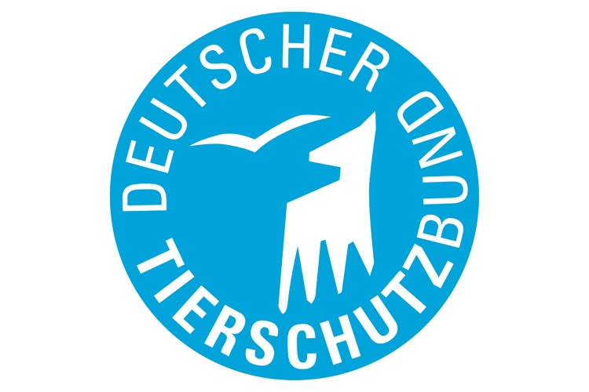
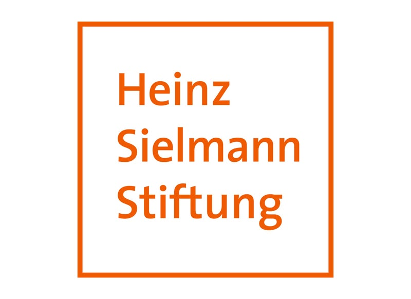

Projekt 1: Kinderhospiz

Die Stiftung Ambulantes Kinderhospiz München begleitet Familien mit schwerst- oder lebensbedrohlich erkrankten Kindern und Jugendlichen.
Mehr lesenKleine Entscheidung, große Wirkung - entdecke unsere Herzensprojekte!

Die Stiftung Ambulantes Kinderhospiz München begleitet Familien mit schwerst- oder lebensbedrohlich erkrankten Kindern und Jugendlichen.
Mehr lesen
Der deutsche Tierschutzverbund setzt sich bundesweit für den Schutz und die Rechte von Tieren ein.
Mehr lesen
Die Heinz Sielmann Stiftung engagiert sich für den Natur- und Artenschutz sowie den Erhalt der biologischen Vielfalt.
Mehr lesenVielleicht kennst du selbst eine Person, ein soziales, ökologisches, oder tierrechtliches Projekt, das unser nächstes Spendenprojekt werden sollte. Oder du kennst eine Organisation, die Unterstützung gut gebrauchen kann.
Schick uns gerne deine Idee, den Namen des Projekts/der Person, einen Link(sofern vorhanden) und eine kurze Begründung warum dieses Projekt zu Sockmate passt. Wir freuen uns über deinen Vorschlag!
#Link zur Kontaktseite Projekt vorschlagen